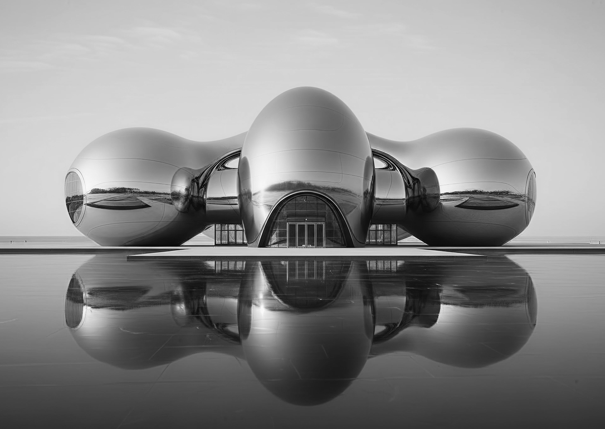
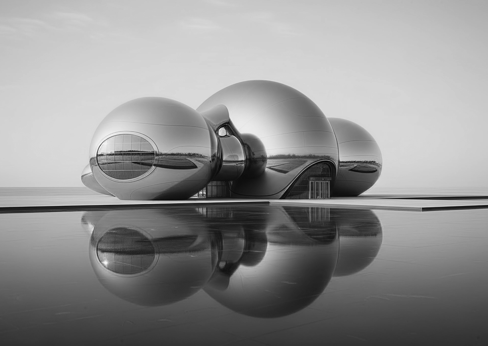

лаборатория маленьких действий
Лаборатория маленьких действий — физический центр проекта “соберись”. Сюда приходят, когда не хватает структуры, энергии или понятного первого шага. Внутри лаборатории цель пользователя проходит путь от размытого желания до конкретного челленджа: сначала самосканирование, потом сборка маршрута, затем первое действие и закрепление результата


